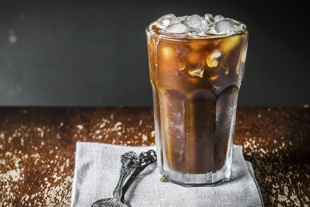

Coffee: Hot or Cold ??
Why Hot Coffee is good?
- Hot Coffee has been proven to be healthier than Iced Coffee, because it has more antioxidants.
- A study has found that Hot Coffee can put you in a more positive mindset.
- The aroma of Hot Coffee can make you feel less stressed in the morning.
- A study in 2018 found that Hot Coffee can reduce your risk of certain diseases.
Ice Coffee is the BEST!!!!
- Ice coffee is one of the best drinks created by human kind.
- Its what wakes you up from the coffe but with a sweet nice side that relax your system and allows you to actually enjoy your drink.
- Its a very popular drink and it can be changed and added so many different flavors.
- The cold of the coffee not only give a good tate but it refreshes and makes you ready for what ever you have to confront.
x

Hot Coffee is so much beter than Iced Coffee!
- Iced Coffee does not have a rich, creamy taste like Hot Coffee does.
- Iced Coffee can not remain its rich taste, it gets bland and watery after being left out for a while.
- Iced Coffee can cause a mess, by sweating all over the table and your hands.
- Iced Coffe was thought to be healthier for having less acidic than Hot Coffee, but this fact has been proven to be wrong.
Ice Coffee beats hot coffee in a flash!!
- Hot coffee burn your lips every time you try to take a sip
- It has no flavour what so ever
- Its just a boring way to get through your morning
- Those coffe stains are really hard to get out of yur clothes